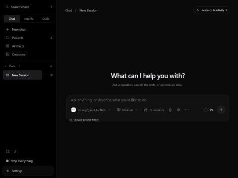
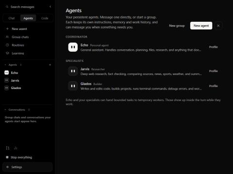
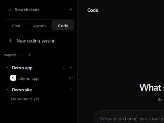
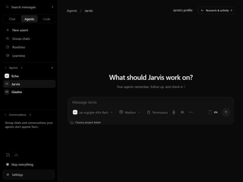
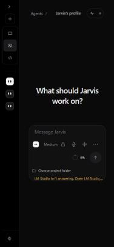

EchoSpeak / Chat, Agents and Code
28 October 2026 · technical record: docs/research/three-environments.md
One app, one sidebar, three environments.
APIs and local models in Chat, teammates in Agents, projects in Code.
Evidence: the screenshots below are from a browser preview on the owner's PC with a throwaway data folder and no model calls. Behaviour rules are covered by deterministic tests. A live model reply and the installed app are the owner's checks.
Same sidebar, different content





One rule decides where a conversation lives
Echo native or the runtime's own harness
the agents answer as themselves
the chosen model answers
GET /threads (where it shows) read the same function, so they can't disagree.Chat is the model, in the same harness
| Chat (model-first) | Agents (Echo and specialists) | |
|---|---|---|
| Who speaks | The model, named and marked as itself (GPT-5.5, Claude Sonnet 5.5, a local model) | The agent, with its own soul and face |
| Tools | Web, files, terminal, vision, memory, skills, reminders, approvals | The same, plus its team |
| Delegation, agent work tools, workers, editing a persona | Not in Chat | Yes |
| Memory and past chats | Yours, as before | Scoped per agent |
| Safety spine | The same approvals, receipts and first-write work record (R4) in both | |
Agents message you, like contacts
Tier 1 · Echo
The coordinator, always first. It now has its own conversation, and that's where it checks in.
Tier 2 · specialists
Jarvis, GLaDOS and yours. Each has one conversation, shows its last message, and keeps its instructions, memory and work history.
Tier 3 · workers
Temporary and bounded. They appear inside the turn that started them, unchanged.
Changed: check-ins move from the “Check-ins with Echo” chat into Echo's conversation. Routine and reminder chats are now listed under Agents › Conversations.
Code: projects you can organize
Chat → Agents, without copying the chat
Your check
In the installed app: send a Chat message and see the model's name and mark on the reply. Open Echo in Agents and wait for a check-in. Drag an Echo coding session onto another project.